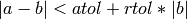

3. arraytools — A collection of numerical array utilities.¶
A collection of numerical array utilities.
These are general utility functions that depend only on the numpy array model. All pyformex modules needing numpy should import everything from this module:
from arraytools import *
- arraytools.niceLogSize(f)¶
- Return the smallest integer e such that 10**e > abs(f).
- arraytools.niceNumber(f, approx=floor)¶
- Return a nice number close to but not smaller than f.
- arraytools.sind(arg, angle_spec=Deg)¶
Return the sin of an angle in degrees.
For convenience, this can also be used with an angle in radians, by specifying angle_spec=Rad.
- arraytools.cosd(arg, angle_spec=Deg)¶
Return the cos of an angle in degrees.
For convenience, this can also be used with an angle in radians, by specifying angle_spec=Rad.
- arraytools.tand(arg, angle_spec=Deg)¶
Return the tan of an angle in degrees.
For convenience, this can also be used with an angle in radians, by specifying angle_spec=Rad.
- arraytools.dotpr(A, B, axis=1)¶
Return the dot product of vectors of A and B in the direction of axis.
The default axis is the last.
- arraytools.length(A, axis=1)¶
Returns the length of the vectors of A in the direction of axis.
The default axis is the last.
- arraytools.normalize(A, axis=1)¶
Normalize the vectors of A in the direction of axis.
The default axis is the last.
- arraytools.projection(A, B, axis=1)¶
Return the (signed) length of the projection of vector of A on B.
The default axis is the last.
- arraytools.norm(v, n=2)¶
Return thr n-norm of the vector v.
Default is the quadratic norm (vector length). n == 1 returns the sum. n <= 0 returns the max absolute value.
- arraytools.solveMany(A, b)¶
Solve many systems of linear equations.
A is a (M,M,...) shaped array. b is a (M,...) shaped array.
This solves all equations A[:,:,i].x = b[:,i]. The return value is a (M,...) shaped array.
- arraytools.permutations(iterable, r=None)¶
- arraytools.inside(p, mi, ma)¶
- Return true if point p is inside bbox defined by points mi and ma
- arraytools.isClose(values, target, rtol=1.e-5, atol=1.e-8)¶
Returns an array flagging the elements close to target.
values is a float array, target is a float value. values and target should be broadcastable to the same shape.
The return value is a boolean array with shape of values flagging where the values are close to target. Two values a and b are considered close if 
- arraytools.unitVector(v)¶
Return a unit vector in the direction of v.
v is either an integer specifying one of the global axes (0,1,2), or a 3-element array or compatible.
- arraytools.rotationMatrix(angle, axis=None, angle_spec=Deg)¶
Return a rotation matrix over angle, optionally around axis.
The angle is specified in degrees, unless angle_spec=Rad is specified. If axis==None (default), a 2x2 rotation matrix is returned. Else, axis should specifying the rotation axis in a 3D world. It is either one of 0,1,2, specifying a global axis, or a vector with 3 components specifying an axis through the origin. In either case a 3x3 rotation matrix is returned. Note that:
- rotationMatrix(angle,[1,0,0]) == rotationMatrix(angle,0)
- rotationMatrix(angle,[0,1,0]) == rotationMatrix(angle,1)
- rotationMatrix(angle,[0,0,1]) == rotationMatrix(angle,2)
but the latter functions calls are more efficient. The result is returned as an array.
- arraytools.rotMatrix(u, w=[, 0., 0., 1.], n=3)¶
Create a rotation matrix that rotates axis 0 to the given vector.
u is a vector representing the Return either a 3x3(default) or 4x4(if n==4) rotation matrix.
- arraytools.growAxis(a, size, axis=1, fill=0)¶
- Grow a single array axis to the given size and fill with given value.
- arraytools.reverseAxis(a, axis=1)¶
- Reverse the elements along axis.
- arraytools.checkArray(a, shape=None, kind=None, allow=None)¶
Check that an array a has the correct shape and type.
The input a is anything that can be converted into a numpy array. Either shape and/or kind can be specified. and will then be checked. The dimensions where shape contains a -1 value are not checked. The number of dimensions should match. If kind does not match, but the value is included in allow, conversion to the requested type is attempted.
Returns the array if valid; else, an error is raised.
- arraytools.checkArray1D(a, size=None, kind=None, allow=None)¶
Check that an array a has the correct size and type.
Either size and or kind can be specified. If kind does not match, but is included in allow, conversion to the requested type is attempted. Returns the array if valid. Else, an error is raised.
- arraytools.checkUniqueNumbers(nrs, nmin=0, nmax=None)¶
Check that an array contains a set of unique integers in a given range.
This functions tests that all integer numbers in the array are within the range math:nmin <= i < nmax
nrs: an integer array of any shape. nmin: minimum allowed value. If set to None, the test is skipped. nmax: maximum allowed value + 1! If set to None, the test is skipped. Default range is [0,unlimited].
If the numbers are no unique or one of the limits is passed, an error is raised. Else, the sorted list of unique values is returned.
- arraytools.readArray(file, dtype, shape, sep=' ')¶
Read an array from an open file.
This uses numpy.fromfile() to read an array with known shape and data type from an open file. The sep parameter can be specified as in fromfile.
- arraytools.writeArray(file, array, sep=' ')¶
Write an array to an open file.
This uses numpy.tofile() to write an array to an open file. The sep parameter can be specified as in tofile.
- arraytools.cubicEquation(a, b, c, d)¶
Solve a cubiq equation using a direct method.
a,b,c,d are the (floating point) coefficients of a third degree polynomial equation:
a * x**3 + b * x**2 + c * x + d = 0
This function computes the three roots (real and complex) of this equation and returns full information about their kind, sorting order, occurrence of double roots. It uses scaling of the variables to enhance the accuracy.
The return value is a tuple (r1,r2,r3,kind), where r1,r2 and r3 are three float values and kind is an integer specifying the kind of roots.
Depending on the value of kind, the roots are defined as follows:
kind roots 0 three real roots r1 < r2 < r3 1 three real roots r1 < r2 = r3 2 three real roots r1 = r2 < r3 3 three real roots r1 = r2 = r3 4 one real root r1 and two complex conjugate roots with real part r2 and imaginary part r3; the complex roots are thus: r2+i*r3 en r2-i*r3, where i = sqrt(-1). If the coefficient a==0, a ValueError is raised.
- arraytools.unique1dOrdered(ar1, return_index=False, return_inverse=False)¶
Find the unique elements of an array.
This works like numpy’s unique1d, but uses a stable sorting algorithm. The returned index may therefore hold other entries for multiply occurring values. In such case, unique1dOrdered returns the first occurrence in the flattened array. The unique elements and the inverse index are allways the same as those returned by numpy’s unique1d.
Parameters: ar1 : array_like
This array will be flattened if it is not already 1-D.
return_index : bool, optional
If True, also return the indices against ar1 that result in the unique array.
return_inverse : bool, optional
If True, also return the indices against the unique array that result in ar1.
Returns: unique : ndarray
The unique values.
unique_indices : ndarray, optional
The indices of the unique values. Only provided if return_index is True.
unique_inverse : ndarray, optional
The indices to reconstruct the original array. Only provided if return_inverse is True.
Examples
>>> a = array([2,3,4,5,6,7,8,1,2,3,4,5,6,7,8,7,8]) >>> numpy.unique1d(a,True) (array([1, 2, 3, 4, 5, 6, 7, 8]), array([ 7, 0, 1, 10, 3, 4, 5, 6])) >>> unique1dOrdered(a,True) (array([1, 2, 3, 4, 5, 6, 7, 8]), array([7, 0, 1, 2, 3, 4, 5, 6]))
Notice the difference in the 4-th entry of the second array.
- arraytools.renumberIndex(index)¶
Renumber an index sequentially.
Given a one-dimensional integer array with only non-negative values, and max being the highest value in it, the elements are replaced with new values in the range 0..max, such that identical numbers are allways replaced with the same number and the new values at their first occurrence form an increasing sequence 0..max.
The return value is a one-dimensional integer array with length equal to max+1, holding the original values corresponding to the new value 0..max.
Parameters: index : array_like, 1d, integer
An array with non-negative integer values
Returns: index : ndarray, length max
The orginal values that have been replaced with 0..max.
See also
- inverseUniqueIndex
- find the inverse mapping.
- arraytools.inverseUniqueIndex(index)¶
Inverse an index.
index is a one-dimensional integer array with unique non-negative values.
The return value is the inverse index: each value shows the position of its index in the index array. The length of the inverse index is equal to maximum value in index plus one. Values not occurring in index get a value -1 in the inverse index.
Remark that inverseUniqueIndex(index)[index] == arange(1+index.max()). The inverse index thus translates the unique index numbers in a sequential index.
- arraytools.sortByColumns(A)¶
Sort an array on all its columns, from left to right.
The rows of a 2-dimensional array are sorted, first on the first column, then on the second to resolve ties, etc..
The result value is an index returning the order in which the rows have to be taken to obtain the sorted array.
- arraytools.uniqueRows(A)¶
Return (the indices of) the unique rows of an 2-d array.
The input is an (nr,nc) shaped array. The return value is a tuple of two indices: - uniq: an (nuniq) shaped array with the numbers of the unique rows from A - uniqid: an (nr) shaped array with the numbers of uniq corresponding to
all the rows of the input array A.
The order of the rows in uniq is determined by the sorting procedure. Currently, this is sortByColumns.

Documentation
Previous topic
2. formex — Formex algebra in Python
Next topic
4. script — Basic pyFormex script functions